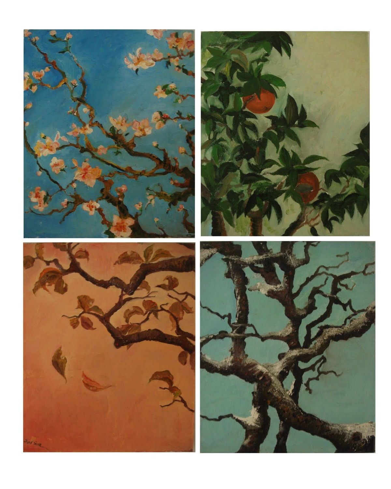

Your Guide to Seasonal Living
"The seasons are what a symphony ought to be: four perfect movements in harmony with each other."- Arthur Rubinstein
Welcome to The Seasonal Scrapbook, a place for all your seasonal dreams. Here you will learn different ways of appreciating each season. Every season has it quirks, summer is hot and sunny all day. Then there's fall it's cooler and the days are shorter. Then comes winter comes and its cold and snowy. Finally, spring arrives with rain and flowers. All of them have something to look forward too, but often we can forget about the good things that each one brings. Discover a new love for each calender month, with the help of The Seasonal Scrapbook.
